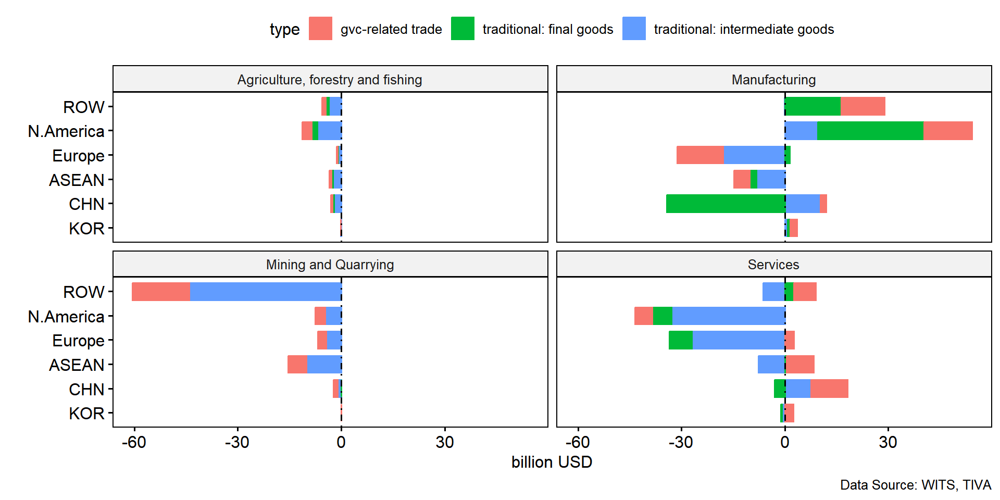
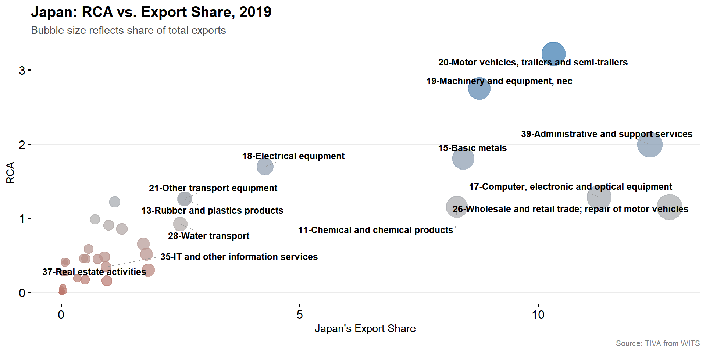
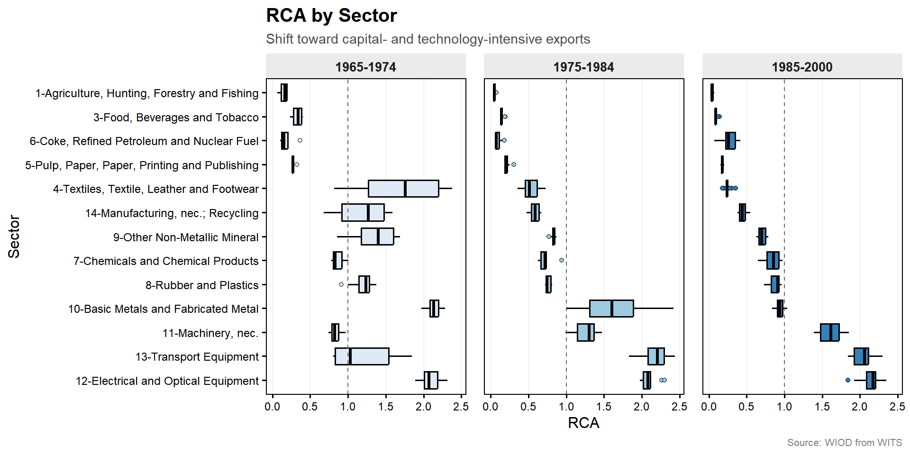
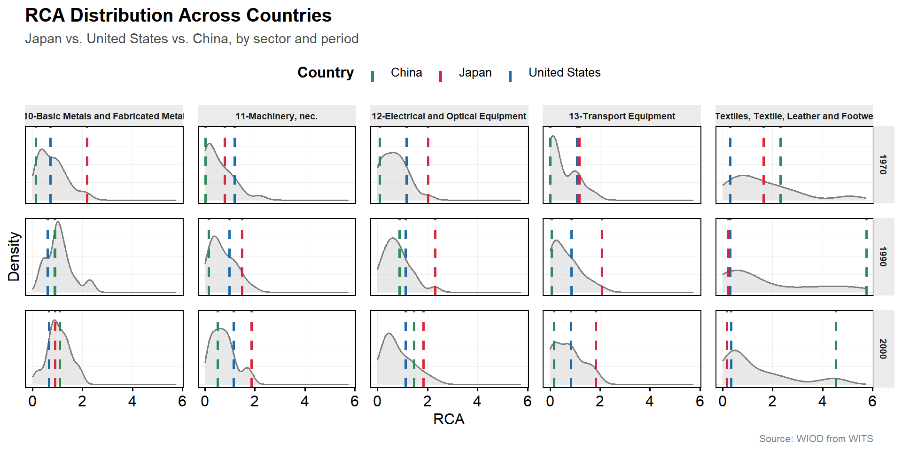

2026-09-29
Japan has capital, labor, and skilled labor
In principle, it could grow more of its food
Instead it imports food and exports machinery
Why?

Comparative advantage: difference in resources or productivity
Economic of scales: similar countries trade if production get cheaper at larger scale
Being better at producing everything is absolute advantage: does not determine what gets traded.
Comparative advantage is about relative opportunity cost: what you give up to produce more unit of something.
Even a country with no absolute advantage in anything still has a comparative advantage in something.
Productivity/technology differences
Short-run immobility
Capital vs. labor abundance
Core idea: countries export the good where their opportunity cost is lowest.
Japan’s technology edge in precision manufacturing lowers the opportunity cost of producing autos and electronics relative to its trading partners.
In agriculture, Japan has higher opportunity costs, which driving the import patterns
Core idea: some factors (land, sector-specific capital) can’t quickly move between industries.
Japan’s farmland and farmers can’t retrain into auto manufacturing overnight.
Despite comparative disadvantage in agriculture, Japan has long-standing protection policy.
Core idea: countries export goods that intensively use their abundance factor.
Japan is capital- and technology-abundant relative to land and labor.
Japan export capital-intensive goods (car, electronics) and imports land/labor-intensive goods (food, raw materials)
Exports where relative productivity is highest
Protection of agriculture despite comparative disadvantage
Exports capital-intensive goods, imports land/labor-intensive goods
Kowalski (2011, OECD): 55 OECD and emerging economies.
Convergence across countries
Divergence across countries
North-North (within OECD): became more homogeneous on most sources
South-South (within non-OECD): gap remains for capital-to-labor ratio and regulatory indicators but narrowed for education, energy supply, financial development.
North-South (OECD vs. non-OECD): Gap widened for physical capital, credit availability, regulatory quality but narrowed for human capital
The Balassa index (Balassa, 1965): how much more (or less) a country exports of a good, relative to its share of world trade.
\[ RCA = \frac{\text{country's export share of good X}} {\text{world's export share of good X}} \]
In what sectors does Japan have high RCA?
In what sectors does Japan have low RCA?



RCA reflects actual trade flows, which are already shaped by tariffs, subsidies, and protection, not a “pure” underlying advantage.
Global value chains: a “Japanese” car may contain parts made in many countries, blurring what RCA is really measuring.
Categorization-sensitive: results can shift depending on how narrowly or broadly a “sector” is defined.
Japan’s trade pattern can be explained by theories on comparative advantages.
RCA gives us an empirical way to confirm the pattern the theories predict.
RCA has its limits